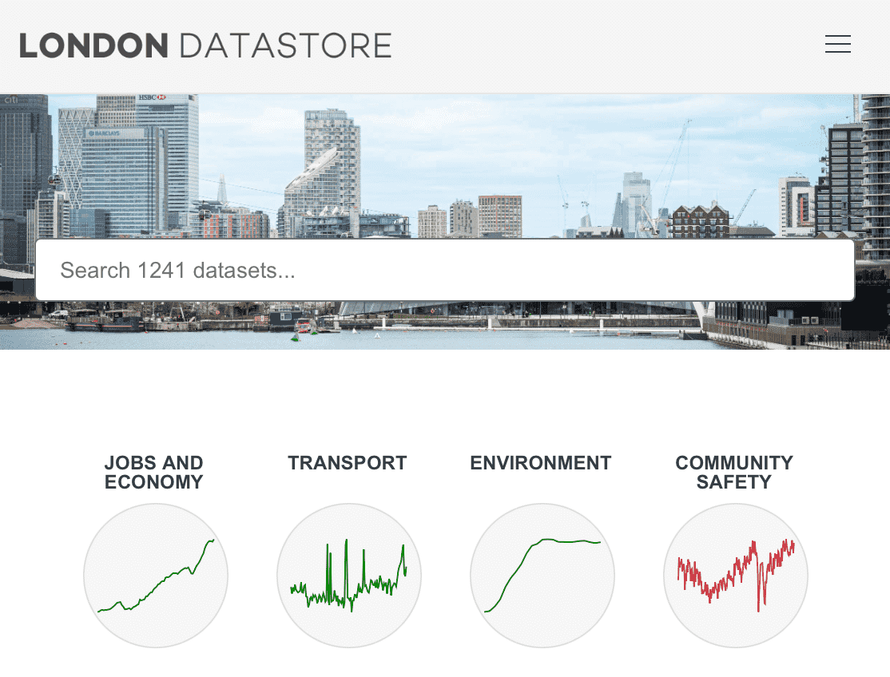

library(tidyverse)
library(janitor)
library(readxl)🛠️ Mini-project
Air pollution and respiratory disease
Air pollution is a known risk factor for respiratory and cardiovascular diseases. High pollution levels can exacerbate conditions like asthma, COPD, and heart disease, leading to increased hospital admissions and mortality. Public Health England (now part of the UK Health Security Agency) and NHS Digital provide datasets that allow us to explore potential patterns between pollution levels and hospital demand.
This project will explore the relationship between air pollution and health outcomes using open datasets. You will download, clean, and manipulate information on air pollution and mental health across London boroughs.
The session will practice skills learnt so far in the course, including data import, manipulation, creating and modifying columns (e.g., mutate), and merging (e.g., inner_join). Once the data is cleaned and combined, you’ll create plots to illustrate the relationships in the data.
ImportantThese tasks are intentionally open-ended.
You will encounter challenges, and that’s the point. Problem-solving is a core skill in programming and data science. Real-world data is often messy, incomplete, or formatted inconsistently, requiring creative thinking and troubleshooting. You are encouraged to use online resources, AI tools, and any other support available to you. Most importantly, ask questions when you get stuck, either by posting in the chat or unmuting yourself.
1 Air pollution and hospital admissions
This exercise explores how air pollution is related to hospital admissions across London boroughs. We’ll use use information from the London Datastore, in particular:
London Atmospheric Emissions Inventory (LAEI) 2016 Estimates of key pollutants (NOx, PM10, PM2.5 and CO2) across London boroughs for 2016.
Hospital Admission Rates Emergency hospital admission rates for all conditions and all ages from 2003 to 2015.

Your goal is to clean, merge, and visualise this data.
1.1 Import and inspect
Load any required packages. At a minimum, I reccomend:
Download the following two files, and move them to your current RStudio project folder.
Import the two datasets into R.
Check their structure (
str,head,glimpse).Identify key variables (borough names, PM2.5 levels, hospital admission rates).
TipTips
- You will need to select which Excel sheet to import.
- Look for inconsistencies in variable names and formats between datasets.
1.2 Data cleaning
- Remove unnecessary rows (e.g., blank, UK-wide or regional values).
- Ensure borough names match between datasets.
- Rename and recode variables for consistency.
TipTips
- Use
janitor::clean_names()to simplify column names. - You may need to manually adjust borough names where needed, e.g., with subsetting and assignment.
1.3 Merge
- Use appropriate joining functions (e.g.,
inner_join,full_join) to combine information on PM2.5 (fine particulate matter) with information on hospital admissions. - Identify and resolve mismatches in borough names before merging.
- Check for dropped rows after merging (
anti_join()can help debug).
1.4 Explore the merged data
- Summarise key statistics (
summary(),count()) and tabulate the included boroughs. - Check for missing values (
sum(is.na())). - Inspect distributions of PM2.5 levels and hospital admissions.
Tip
- Use
ggplot2::geom_histogram()to visualise distributions before plotting relationships.
1.5 Visualise the relationship
- Create a scatter plot of PM2.5 vs. hospital admissions rate.
- Label boroughs to highlight key areas.
- Reflect on possible interpretations—does pollution correlate with hospital admissions?
Tip
- Try adding a trend line with
geom_smooth(method = "lm")to explore patterns.
Reflection
- Does the data suggest a link between pollution and hospital admissions?
- What limitations might affect this analysis?
- What additional data could strengthen the investigation?
2 Extracting data via an API
In this practical, we’ll continue to explore relationships between air pollution and population health outcomes, but this time, we’ll download the required data directly via an API. You will:
- Retrieve and clean public health data using the
fingertipsRpackage. - Merge datasets to examine borough-level trends.
- Visualise relationships between pollution and health outcomes.
This is a challenging, open-ended exercise that is designed to make you think. You will need to solve problems, overcome challenges, debug your code, and think creatively.
2.1 Install and load the neccesary packages
We’ll use the fingertipsR package to download data from the Public Health England Fingertips service. Before we start, browse the website to get a feel for the available datasets.
You’ll need to install the fingertipsR package. The simplest way to do this is with the pak package, which handles package dependencies for us:
install.packages("pak")
pak::pak("rOpenSci/fingertipsR")
library(tidyverse)
library(janitor)
library(fingertipsR)2.2 Identify relevant indicators
The Fingertips API provides information on a huge range of public health indicators for England.
As a first step, use the indicators_unique function to extract a list of the available measures. For example:
ind <- indicators_unique()
ind |> filter(str_detect(IndicatorName, "pollution"))
ind |> filter(str_detect(IndicatorName, "Mortality rate"))From the lists above, let’s choose:
93963: Mortality rate from respiratory disease, all ages93867: Air pollution: fine particulate matter
2.3 Extract information for these two indicators
- Use the
fingertips_datafunction to extract information for each indicator (see the help file if you’re unsure). - Use
AreaTypeID = 501to select information for local authorities.
2.4 Clean and merged the two datasets
- You’ll need to process the
timeperiodcolumn to create a consistent ‘year’ indicator. - You should merge on area (e.g.,
area_code) and year. - You will need to handle duplicates (e.g., using
distinct(data, .keep_all = TRUE)
2.5 Plot the merged dataset
Your might consider:
- A scatter plot of air pollution and mortality rate for a single year.
- A line plot of air polution and mortality over time for a few boroughs. (This may require further reshaping of the data).
3 Going further
If you’ve gotten this far and run out of things to do:
To explore further, you could consider incorporating additional longitudinal datasets to analyse trends over time.
Visit this page where you’ll find borough-level datasets covering multiple years. Your goal is to download these datasets, clean them, and merge them with your existing data to create a more comprehensive longitudinal analysis.
Since the data is provided in multiple files, you will need to import and combine them while ensuring consistent formats across years.
You’ll need some form of iteration, e.g., to iteratively download and process all the datasets in R.
Once merged, you can create time series plots to visualise long-term trends and explore whether pollution and health outcomes have changed over time. Think critically about whether changes in policy, healthcare improvements, or external factors might explain trends in your data.